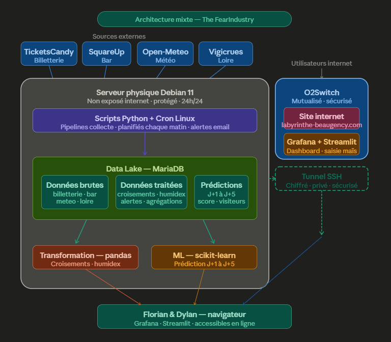

Data Analyst & Analytics Engineer.
Data Analyst, avec pour objectif de devenir Analytics Engineer. La curiosité est le point de départ de mon travail : passionné d'échecs et de résolution d'enquêtes, j'ai appris à repérer le détail qui ne colle pas, à anticiper la suite logique d'un problème et à ne jamais conclure sans preuve. J'applique cette même rigueur à chaque jeu de données. Et comme Columbo, j'ai toujours une dernière question avant de conclure.
Discutons de votre besoin en données.
Ouvert à toute opportunité data : poste, mission ou projet, en Data Analyst comme en Analytics Engineer.
Data Engineering
Labyrinthe de Beaugency
Le défi
Aucune infrastructure data existante pour ce site événementiel en plein air. Mandaté en autonomie totale, l'objectif était de donner aux gérants des chiffres fiables pour décider eux-mêmes, sans recommandation automatique imposée.
Compétences mobilisées
Architecture de données · pipelines ETL automatisés · intégration d'APIs externes · modélisation prédictive · compatibilité multi-SGBD · déploiement d'interfaces · supervision de production.
Architecture

Chess Meta Analytics
Le concept
Une tier list des ouvertures d'échecs, pensée comme un jeu vidéo compétitif : classement par winrate et pickrate, quelle ouverture bat quelle autre, et un niveau de difficulté par profil de joueur. Aucun outil existant (Lichess, Chess.com) n'aborde les échecs sous cet angle.
Pourquoi ce projet
Répondre à une problématique concrète de joueur : le temps et la difficulté à apprendre les ouvertures. Une façon de prolonger ma passion pour les échecs dans un vrai projet data, cadré avant la première ligne de code : architecture, jalons et structure de repository pensés comme en entreprise.
Jalons prévus
Data Analyst
8 projets, du SQL au machine learning, qui construisent les fondations.
Bottleneck — pipeline augmenté par l'IA
Amélioration d'une analyse de ventes existante grâce à l'IA : les erreurs sont détectées automatiquement et les ventes manquantes mieux estimées.
Détection de faux billets
Un algorithme qui détecte les faux billets à partir de leurs mesures physiques, réglé pour n'en laisser passer aucun.
Étude de marché — export international
Identification des pays les plus prometteurs pour exporter un produit, à partir de données économiques et sociales de 126 pays.
Accès à l'eau potable — DWFA
Un tableau de bord qui aide une ONG à choisir où investir en priorité pour améliorer l'accès à l'eau potable.
Librairie Lapage — bilan des ventes
Analyse des ventes d'une librairie en ligne pour comprendre qui achète quoi, et pourquoi.
Profil sociodémographique — DBT
Un pipeline automatisé qui suit, chaque année, l'évolution du profil des étudiants en formation data.
Pilotage de portefeuille de projets
Un tableau de bord qui suit en temps réel les coûts, les délais et les retards d'un ensemble de projets.
Base de données immobilière — DataImmo
Une base de données immobilière interrogeable en SQL pour analyser les prix de vente partout en France.